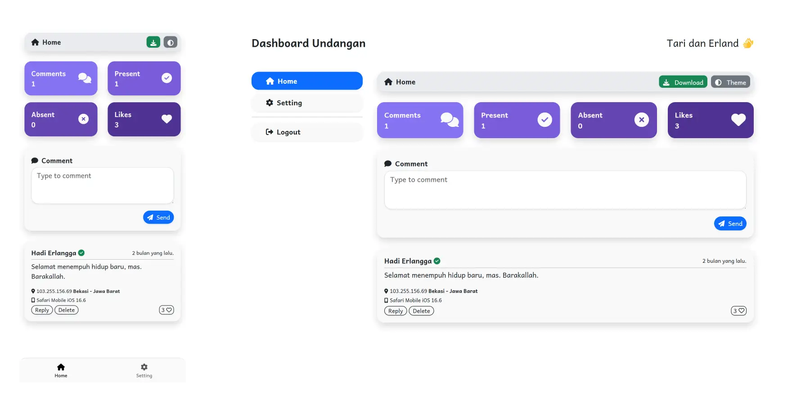
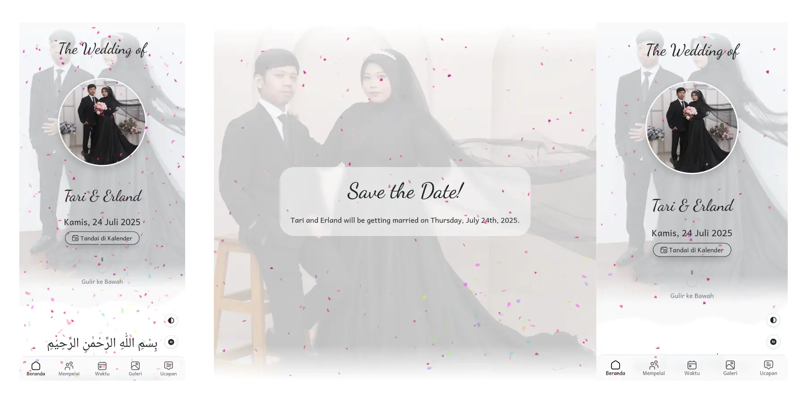

Lebih enak untuk jualan jasa sekaligus tetap punya dashboard operasional
Visitor pertama kali akan melihat landing page promosi Anda, bukan langsung halaman undangan. Ini membuat website lebih fleksibel untuk dipakai sebagai website jasa pembuatan landing page, website promosi UMKM, maupun undangan digital premium.
Promosi lebih jelas
Homepage menjelaskan layanan, portofolio, alur kerja, harga, dan CTA order tanpa bercampur dengan halaman operasional.
Dashboard terpisah
Akses ke dashboard dibuat khusus untuk pengguna yang login sehingga pengalaman pengunjung umum dan tim internal tidak bercampur.
Tetap multi-profile
Data pasangan, template, generator link, dan text generator tetap berjalan menggunakan profile dari database yang sama.
Role admin dan user punya fokus kerja berbeda
Kontrol penuh sistem
- Login memakai email & password.
- Mengelola profile premium, access key, dan pengaturan dashboard.
- Mengatur kontrol komentar dan konfigurasi akun.
Operasional harian
- Masuk memakai access key / token user.
- Melihat dashboard yang lebih sederhana dan aman.
- Fokus ke monitoring komentar, overview, dan aktivitas operasional.
Halaman penting tetap tersedia

Dashboard
Kelola data, komentar, role, dan profile undangan dari satu tempat.
Buka dashboard
Invitation Page
Halaman undangan publik kini dipisahkan supaya homepage tetap fokus untuk promosi.
Preview invitationHomepage untuk closing, dashboard untuk kerja tim, invitation page untuk publik.
Struktur ini membuat website lebih masuk akal untuk dipakai sebagai bisnis jasa pembuatan landing page sekaligus tetap mempertahankan use case undangan digital premium.